Le meilleur pour la faim
Pâtisserie · Salon de thé · Déjeuner
28 place Viarme, Nantes. Des créations de saison, faites maison.
N°06 de la vitrine
Choconoisette
Défiler pour la découvrir
Anatomie d’une pâtisserie
La choconoisette, couche par couche.
Trois textures montées à la main, du sablé jusqu’au décor.
01 — Le dessus
Ganache montée noisetteLégère, montée minute, coiffée de noisettes caramélisées.
02 — Le cœur
Mousse Valrhona Hukambi 53 %Elle renferme un crémeux et un praliné noisette.
03 — La base
Brownie gourmandFondant et sans gluten, comme toute la choconoisette.
Imaginées, montées et décorées ici, à la main.
Des pâtisseries fines et peu sucrées, qui changent au fil des saisons : vanille de Madagascar bio, chocolats Valrhona et Millot, fruits du moment.
La vitrine.
01 / 14
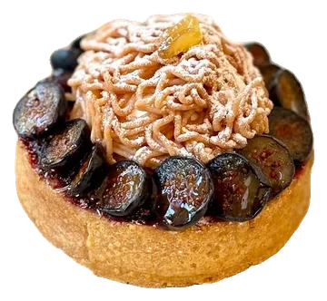
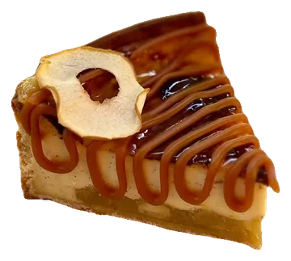
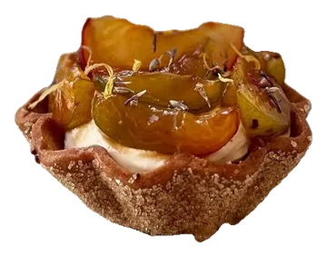
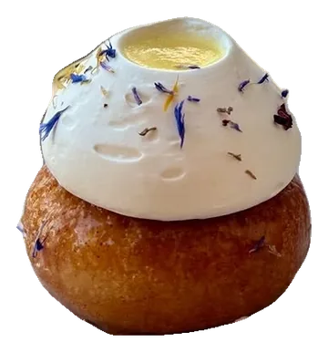
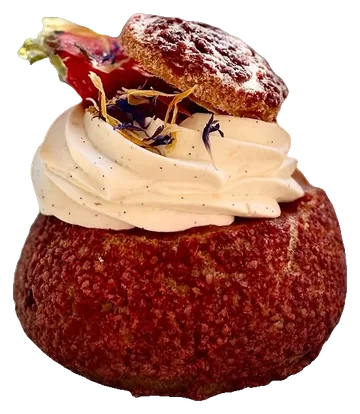
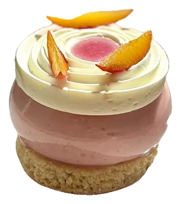
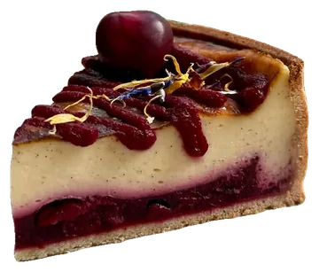
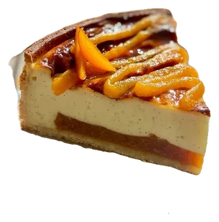
- Chou · poire chocolat (automne) : Compotée de poire, croustillant muesli, namelaka au chocolat noir, crème légère vanille et bille de poire pochée.
- Tarte · poire & vanille (automne) : Crème d’amande, compotée de poires, crème légère à la vanille bio et amandes caramélisées.
- Tarte · myrtille & marron (automne) : Crème d’amandes, compotée de myrtilles, ganache montée vanille et crème de marron.
- Flan · pommes & caramel (automne) : Flan à la vanille de Madagascar bio, compotée de pommes, caramel au beurre salé.
- Tarte · prunes & tonka (automne) : Croustillant Valrhona, compotée de mirabelles, crème diplomate à la tonka, reines-claudes fraîches.
- Choconoisette (hiver, sans gluten) : Mousse Valrhona Hukambi 53 %, cœur crémeux et praliné noisette, ganache montée noisette, brownie.
- Zeste breton (hiver, sans gluten) : Ganache montée, crémeux et confit au kalamansi, sur un sablé breton. Acidulé à souhait.
- Baba · ananas (hiver) : Un baba au rhum, une compotée d’ananas et une crème à la baie de passion.
- Chou · fraise & rhubarbe (printemps) : Compotée fraise-rhubarbe, croustillant muesli et crème à la vanille de Madagascar bio.
- Cerise noire (été) : La forêt noire revisitée : biscuit cacao, compotée de cerise, crème vanille, namelaka Millot bio 74 %.
- Tarte · fraise & basilic (été) : Croustillant Valrhona, compotée fraise & basilic, crème diplomate, fraises fraîches et françaises.
- Douceur de pêche (été, sans gluten) : Mousse pêche blanche, compotée de pêches, biscuit amande, crème légère à la baie de timut.
- Flan · vanille & cerise (été) : Flan à la vanille de Madagascar bio, compotée de cerise, coulis de cerise, sur pâte sucrée.
- Flan · vanille & abricot (été) : Flan à la vanille de Madagascar bio garni d’une compotée d’abricot, sur pâte sucrée.
Automne
Chou · poire chocolat
La maison · 28 place Viarme
La maison
En Suède, la fika est une pause qu’on s’accorde plusieurs fois par jour. Chez nous, elle se prend dans un salon 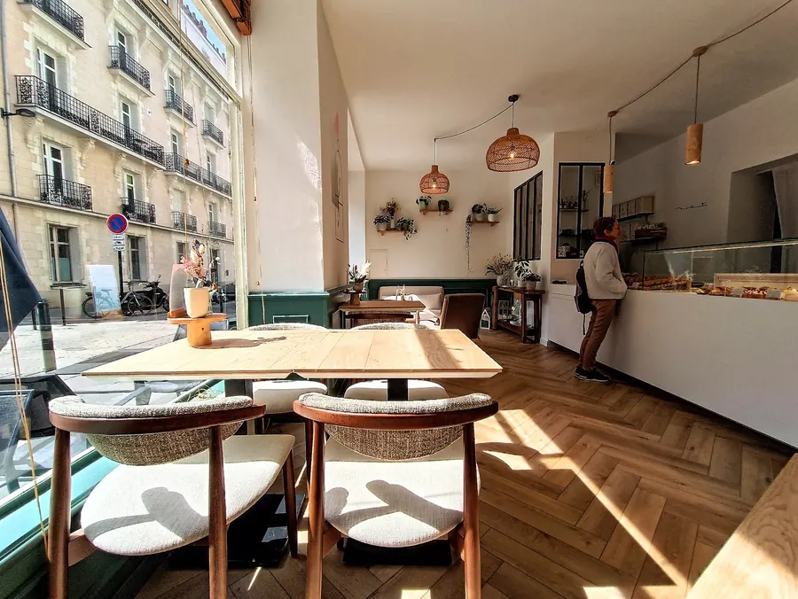 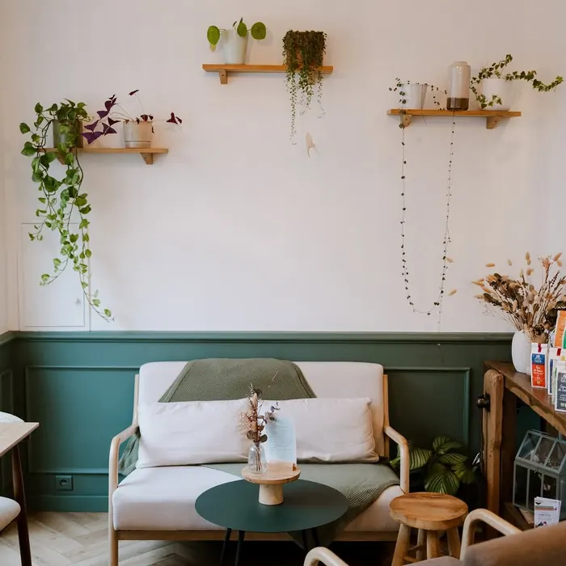
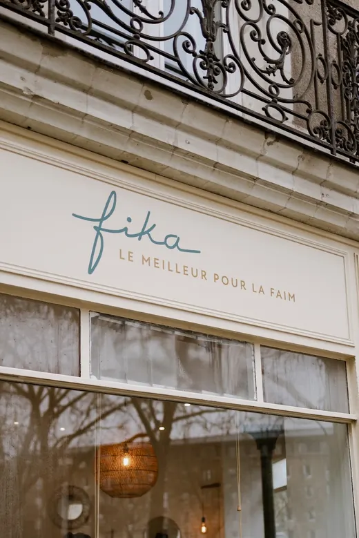
Du mercredi au samedi
Le midi.
Salades, focaccias, veloutés : la carte salée change avec les produits du moment. On choisit au comptoir, on s’installe, et on termine par la vitrine.
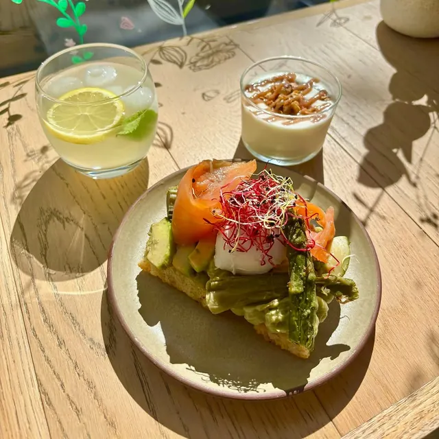
Formule déjeuner
Sans réservationUn choix salé + une pâtisserie + une boisson
Bière ou cidre : + 0,50 €
Le comptoir à café
- Expresso2,00 €
- Allongé2,00 €
- Double3,00 €
- Noisette3,00 €
- Cappuccino3,50 €
- Latte4,00 €
- Mocaccino4,50 €
Et aussi : chocolats chauds, thés et infusions, boissons fraîches, kanelbulle à toute heure.
Sur commande
Les grands formats.
Les entremets de la vitrine existent en version à partager, et l’atelier imagine des number cakes et letter cakes sur mesure, à votre âge ou à vos initiales.
Pour un anniversaire, un mariage, une naissance, un PACS… Pour les formats à partager, la commande est fortement conseillée.
4,9/5
198 avis sur Google
« Les pâtisseries sont fines (pas trop sucré) et délicieuses. Les cafés sont généreux. »NLP · avis Google
« Super lieu ! Autant pour leurs pâtisseries que pour y manger le midi ! Tout y est bien pensé. »Alexis Valein · avis Google
« Cadre chaleureux bien décoré, le déjeuner était vraiment très bon, réalisé avec des produits frais et fait maison. »Tazette Tazmanie · Local Guide